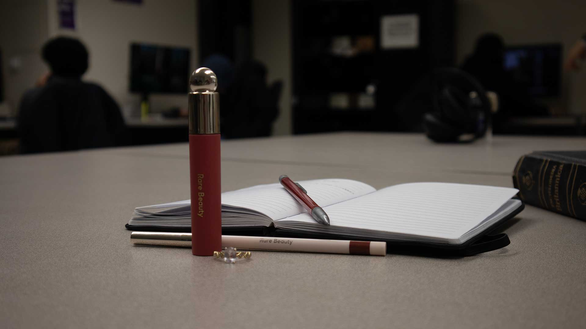
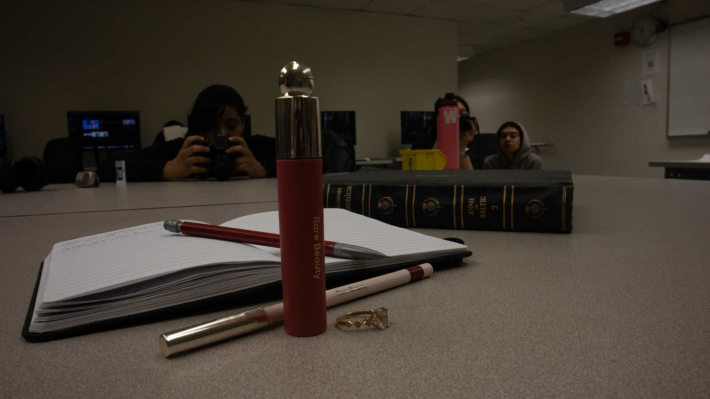
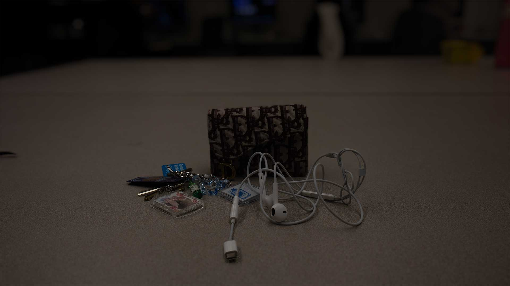
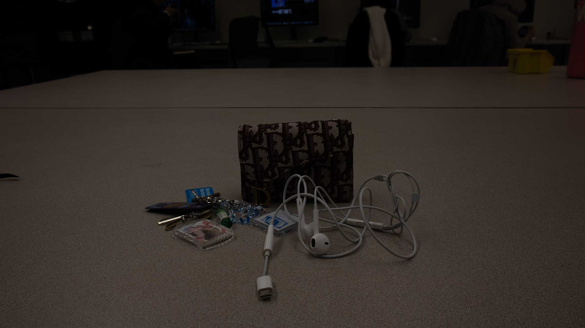

I posted 4 JPG images total: a shallow depth of field photo, a deep depth of field photo, a Photoshop blur version, and the original image used for the blur comparison.
| Shallow DoF | Deep DoF |
|---|---|
|
 Settings are f/4.5, 1/80s, ISO 200. Subject is sharp and background is blurred. |
 Settings are f/13, 1/100s, ISO 800. Foreground and background appear sharp. |
| Photoshop Blur (Blur Gallery) | Original |
|---|---|
|
 I used Filter > Blur Gallery > Field Blur to blur the background while keeping the subject sharp. |
 This is the original image before applying the Blur Gallery filter. |
Write your reflection here. Explain what you were trying to photograph, what you learned about shallow versus deep depth of field, how aperture/f-stop affected your results, and what you did in Photoshop to create an artificial depth of field effect. Also describe any Camera Raw adjustments you made (exposure, clipping warnings, histogram, straightening) and why you made those changes.